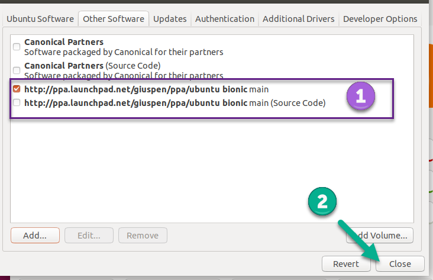

Index
- Images
- Tables
- Codebox
- Files
- Links
- Anchors
- Table of Contents
- Timestamps
- Special Characters
- Horizontal Rule
Ubuntu
Ubuntu
Cherrytree can be installed to Ubuntu via the Ubuntu Software application or the command line.
Installing with Ubuntu Software
The Cherrytree PPA (Personal Package Archive) must be set to ensure that the latest application version installs.
1. Open the Software and Updates application.
2. Go to the Other Software tab.
3. Click Add.
4. Enter the following snippet into the textbox:
ppa:giuspen/ppa
5. Click Add Source and enter your password when prompted.
6. Confirm that the PPA is added then close the window.
Figure 2.01

7. Click Reload and enter your password to install updates from the newly added source.
8. Open Ubuntu Software and search for Cherrytree.
9. Select the application and click Install.
10. Provide your password when prompted to begin the installation.
11. Launch Cherrytree and confirm that the latest version of the application is installed by selecting Check Newer Version from the Help menu.
Installing via Command Line
1. Download the latest installer that has a .deb extension from the downloads webpage.
2. Open a terminal and change to the directory containing the installation file.
3. Enter the following command, replacing cherrytree.deb with the name of your installation file:
sudo dpkg -i cherrytree.deb
4. Provide your user password when prompted to begin the installation.